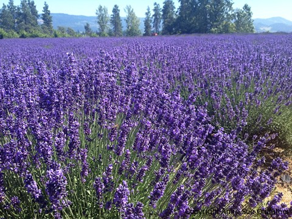
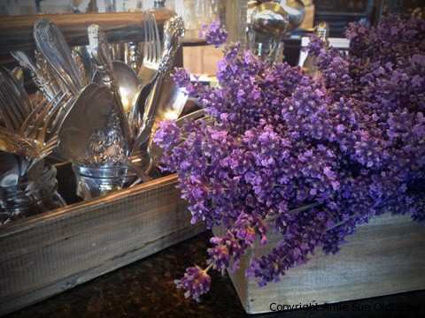
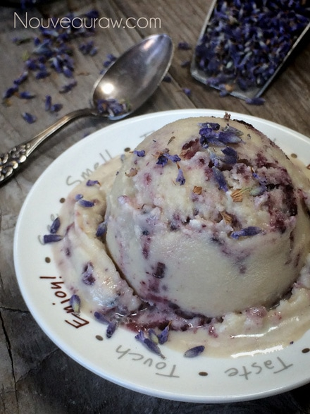

Blueberry Grape Lavender Ice Milk

~ raw, dairy-free, gluten-free, nut-free ~
Ice milk is light, flavorful, and not as cloying as its richer ice cream cousins… we love our “cousins”… but it takes all kinds to form one big happy family. So today, I am sharing with you my version of ice milk.
The texture is light and icy, sweet but not over the top, loaded with fresh ripe summer fruits, and to round it out with a softness of flavor… I added a touch of lavender. Truly, an excellent combination.
Stop and Smell the Lavender
Inhaling the beautiful scent of lavender, as well as taking it internally, has been used to treat neurological issues like migraines, stress, anxiety, and depression. Even though we are using lavender in our ice cream here… I suggest that before adding it to the recipe that you cup some in your hands, burying your nose in it, and take a few deep inhales.
Culinary Lavender
There are many different varieties of lavender that can be used in cooking, but some varieties are more widely used. If possible look for the following; Lavandula angustifolia, and “Munstead.” These two lavenders have the sweetest fragrance among all species of lavender, which creates flavor in cooking. You can use the whole flower, stems, leaves, and buds when preparing food but to get the flower buds, in particular, gives a dish a more subtly sweet, citrus flavor.

How to Dry Lavender
To dry lavender for culinary use, snip the stems off the plant just after the flowers have opened and hang the stems upside down or lay them flat to dry. If you don’t care for the strong floral taste that they can have, you can dry-roast them to help remove some of it. I for one prefer just to dry it naturally.
I have the privilege every year to visit the lavender farms near our home. It is just breath-taking to let your eyes rest on the endless horizon of the sea of lavender flowers. I never miss the opportunity to go and harvest my own fresh flowers so I can dry them at home for various projects.

Ingredients:
Yields 5 cups
Preparation:
- Coconut milk/cream – I supplied two options for the coconut milk.
- If you make raw coconut milk from Young Thai coconuts, use the least amount of water possible. Be sure to blend it until very creamy.
- If you use canned, use the full fat and chill it overnight before using.
- In the blender combine the coconut milk, honey, lecithin, lavender buds, and salt. Blend until creamy.
- Hand mix in the jam to leave visible chunks.
- Pour into ice cream maker and freeze according to ice cream maker’s manufacturer’s instructions.
- Enjoy right away or store in an airtight container in the freezer.
Freezing Suggestions for Ice Cream:
- Use an ice cream machine. Follow the manufactures directions.
- Freeze in popsicle molds or 3 oz Dixie cups with a popsicle stick inserted.
-
- Store the ice cream in the very back of the freezer, as far away from the door as possible. Every time you open your freezer door you let in warm air. Keeping ice cream way in the back and storing it beneath other frozen-sold items will help protect it from those steamy incursions.
- Ice cream is full of fat, and even when frozen, fat has a way of soaking up flavors from the air around it—including those in your freezer. To keep your ice cream from taking on the odors, use a container with a tight-fitting lid. For extra security, place a layer of plastic wrap between your ice cream and the lid.
- To soften in the refrigerator, transfer ice cream from the freezer to the refrigerator 20-30 minutes before using. Or let it stand at room temperature for 10-15 minutes.
- Wish to make your own raw ice cream, wonder what machine I might recommend, and more? Click (here) to check out the Reference Library!


© AmieSue.com